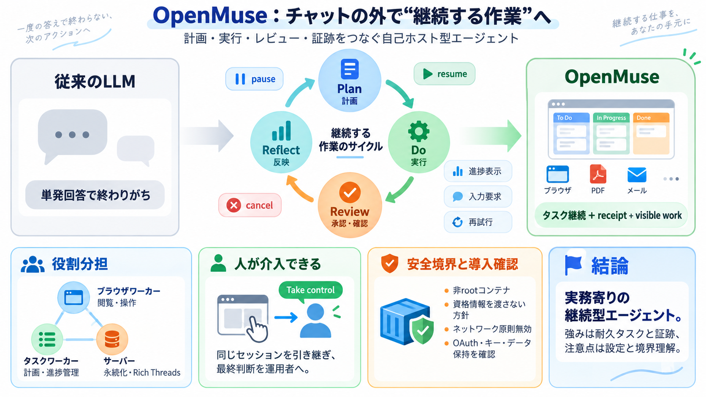

CopilotKit Intelligence
CopilotKit Intelligence is CopilotKit's production layer for persistent Rich Threads, User Memories, Product Analytics, …

ブラウザ閲覧・端末実行・ファイル作業・メール文書などを、計画に基づく継続タスクとしてつなぎます。チャットの外側で「やりっぱなし」にならない設計です。
多くのLLMは回答生成で終わり、実務の「計画→実行→確認→反映」を証跡つきで残しにくい問題があります。OpenMuseはタスクを保持し、途中停止・再開・レビューを組み込みます。
OpenMuseは「ブラウザワーカー」「タスクワーカー」「サーバー」などの役割分担で動きます。入力データ（機能一覧、セットアップ手順）もこの前提で整理されています。
エージェントはタスクプランを保持し、進捗・入力要求・承認・一時停止/再開/キャンセル/再実行を伴って処理を進めます。単発生成ではなく「運用フロー」が主役です。
OpenMuseの核は、結果生成だけでなく「作業の証跡」を作り、後から追跡できる状態にすることです。権限証書のような書類処理を想定しています。
Gmailのスレッド検索や添付からPDF化して、必要なフォーム値を埋める一連の流れが想定されています。作業のどこが保留か、どこが承認かが重要になります。
OpenMuseは生成物（文章）よりも、作業の状態管理（pause/resume/cancel）とレビューを重視します。結果はメール・ブラウザ・PDF・計画カードなど“見える成果物”で提示されます。
“Take control”は、エージェントが使っているブラウザセッションをユーザーが同じセッションとして引き継ぎ操作できる仕組みです。自動調査の結果をその場で確かめ、続行判断をユーザーが行えます。
端末（Linux workspace）は非rootコンテナとして動き、ホストディレクトリや資格情報を渡さない方針が示されています。さらにネットワークは原則無効で、外部アクセスをブラウザワーカーに寄せて攻撃面を抑えます。
CopilotKit Intelligenceは、Rich Threadsのような“会話の永続化/リプレイ”に関わり、プロジェクトAPIキーなどの設定が前提になります。自己ホストでは、別サービス性を理解して運用する必要があります。
Alpha段階で、CopilotKit Intelligence設定、Google OAuth、ブラウザワーカーの起動、Linuxコンテナ実行など、運用・安全性・認証境界の理解が不可欠です。特に「意図しないリトライはしない」「外部書き込みは確認後に置換」など慎重さが方針です。
OpenMuseは、ブラウザ/端末/ファイル/メール/財務追跡をまたいで“作業を前進させる継続型エージェント”を自己ホストで実現しようとする試みです。強みはタスク耐久性とユーザー介入（Take control）、注意点は設定・境界理解と運用負荷です。
CopilotKit Intelligence is CopilotKit's production layer for persistent Rich Threads, User Memories, Product Analytics, …
Your app code doesn't change between OSS-only, cloud-hosted, and self-hosted. The boundary is a runtime config switch. […
An OpenAI API key for the .NET starter .NET 9.0 SDK or later Node.js 20+ Your favorite package manager (npm, pnpm, ya…
Keep the traces and evals your engineering team already relies on. CopilotKit adds the product view: what users try, whe…
This isn't just another wrapper—it is a tool built specifically as a bridge for AI agents in QA and development (like Gi…